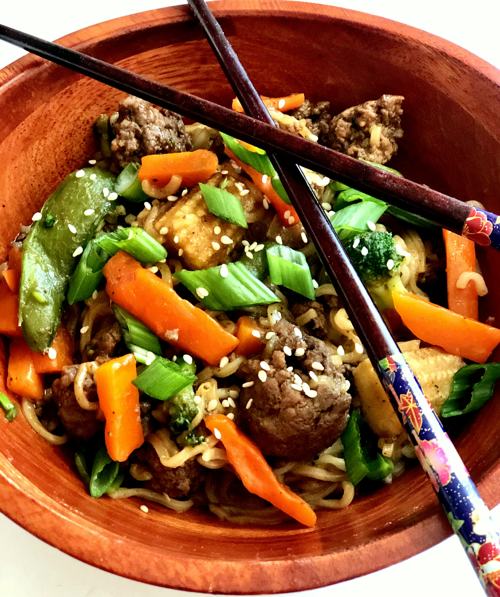

Asian Ground Beef Noodle Bowls

Easy and quick to make using Top Ramen® noodles and ground beef. Great for a busy school night.
The ingredients in this recipe can approximately preapred for 10 minutes and then cooked for about 15 minutes.
This makes 4 servings for your family!
Ingredients
- 1 pound ground beef
- 2 teaspoons green onion, white part only, thinly sliced
- 2 ½ cups water
- 2 (3 ounce) packages ramen noodles (such as Nissin® Top Ramen®)
- 11 (12 ounce) package frozen Asian vegetable medley
- 3 tablespoons hoisin sauce
- 2 tablespoons soy sauce
- 1 tablespoon Sriracha sauce
- 1 tablespoon brown sugar
- 1 tablespoon chopped fresh cilantro
- ½ teaspoon Chinese five-spice powder
- ¼ teaspoon ground ginger
- 2 tablespoons green onions, green parts only, thinly sliced
- 2 teaspoons sesame seeds
Steps
-
Cook ground beef and white part of green onions in a large skillet over medium-high heat until meat is no longer pink and onions are soft and translucent, about 5 minutes.
Remove from pan, drain, and set aside.
-
Add water, ramen noodles, and frozen vegetables to the same skillet.
Bring to a boil and cook until noodles are tender, 3 to 5 minutes.
-
Meanwhile, combine hoisin sauce, soy sauce, Sriracha sauce, brown sugar, cilantro, Chinese five-spice, and ginger in a small bowl; stir until sauce is well combined.
-
Return meat to the skillet, add sauce, and and stir until heated through, about 2 minutes.
Serve topped with green onions and sesame seeds.